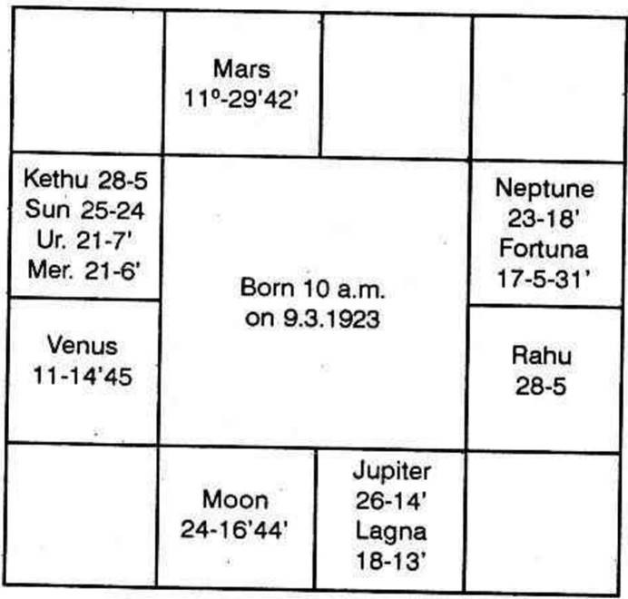

Horoscope

When a person is born, he inherits the assets and the liabilities of his or her parents. As years pass on, even when the parents are alive, one may save separately some amount or incur debts. After the demise of one's parents, one may have to borrow if the expenses outweigh the income. One may have decent bank position for some years. Then he may have to borrow. Later he may return and clear off either part of the loan or discharge it in full.
All these depends on the dasa and bhukti which follow one after the other.
One deposits money in the bank when one has income more than his expenses at that time. It is indicated by the houses 2, 10 and 11. 6th is for borrowing and thereafter depositing.
The second house is for self acquisition and bank position, the 6th house for 'Borrowing'; the 10th house means profession and the 11th house indicate 'profit'.
During the conjoined period of the Significators of 2nd and 6 one will borrow. The 8th house threatens risk, danger and loss or a windfall if the Significator of 8 is also Significator of 6 and 11. The 12th house indicates expenses, purchases, donation, repayment of loan etc.
The Lagna represents the person to whom the horoscope belongs. The seventh house denotes the persons who either lends or borrows. As loan is an income to the borrower, it is the expenses or investment to the lender which is indicated by the 12th house to the 7th house. Therefore, one has to examine the 6th house for the debts.
Expenses include the discharge of loan. It may be a part - payment towards the debts or one may clear off the loans and be free from it. Bank overdraft is also indicated by the 6th house and discharging it is judged from the 12th house. In Uthra Kalamritha, Kalidas has said that one has to consider the 12th house for the clearance of loan.
As the second house denotes one's financial position the second to the seventh shows the finance of one with whom the native transacts. Suppose there is a benefic in the 8th Bhava, it means that the person with whom one transacts, is lucky during the period of the planet in 8. Generally, one regains the money that is lent to others. In a few cases, it so happens that one is to consider oneself lucky, if he somehow or other has his money returned by the person who borrowed. In the latter case, the persons who borrowed will have a benefic in 8. The borrower will gain without effort. So he repays. That is why, he who lent money is lucky, during the period of the benefic in the 8th house. If circumstances force one, he borrows. Is there anybody who would not mind maintaining one's prestige? No, everybody will try to keep up his or her word and maintain one's family prestige honour, etc. All will make efforts to return the amount borrowed in time. He can do so, if there is a benefic in the 8th house especially the lord of 12. The lord of 12 in 8 will cause Vipareetha Raja yoga. Suppose Jupiter is the lord of 12, and it is in the 8th house, it can aspect one's 12th house and 2nd house. Therefore, people born in Makara - Capricorn Lagna will return their debts during Jupiter's periods and sub periods, without strain.
Suppose there is an evil in the 8th house. It means that he who lends money has a malefic in the 2nd house to the 7th. As malefics in the second house threaten loss of money during its period and sub periods, one will lend money to the native of the horoscope having a malefic in the 8th house and will be depressed, disappointed and irritated during its period as the borrower is not able to return the loan. Those who lend money should note, whether the borrower has a benefic or a malefic in 8 before lending money so that he may know where he stands. These are the methods to be followed.
This native is born in Libra Ascendant. Mars in Aries is in the 6th house. Jupiter owns the 6th house.
Therefore, note the constellations of Mars and Jupiter.
Mars rules Mrigasirisha, Chitra and Dhanishta - Jupiter governs Punarvasu, Visaka and Poornapathrapatha.
Find out the planets situated in the constellation of Mars and Jupiter; Also, note which planets are in the sub of Mars and Jupiter. They indicate (a) the necessity to borrow money, and (b) the time of raising the loan.
So also note the planets occupying the constellation of the lord of 8 (venus, a benefic) and the lord of the 12th house.
Sun: Labhadhipathi, lord of 11, who is to give you profit, who is to increase your income, as it aspects the 11th house one will normally predict, that you should gain and there is no necessity to borrow. But, actually you had been borrowing. Why? Because Sun was in the constellation of Jupiter, the lord of 6 and the sub of mercury, lord of 12. Hence during the period of Sun, you will borrow from A, and repay it, then borrow from B, repay and so on.
Moon was in Mercury's star and Rahu sub. Hence, Moon indicates repayment by making money in your profession.
Rahu in 11, in the constellation of the lord of 11 and in the sub of Moon, promises that you will have no debts in the conjoined period of Moon and Rahu.
As you had 7 years, 11 months and 26 days of Mercury Dasa at birth, you enter into Moon dasa on 5 - 3 - '64.
Therefore between 5 - 8 - '65 and 5 - 2 - '67 you will repay and clear off your debts.
As 'A' dasa, 'B' Bhukti, 'A' Anthra will offer the result to the full extent, Moon anthra, in Moon dasa, Rahu Bhukti shows the time when you are free from debts, i.e., 20 - 11 - 1966 to 4 - 1 - 1967.